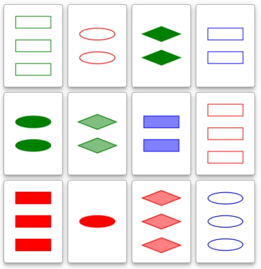
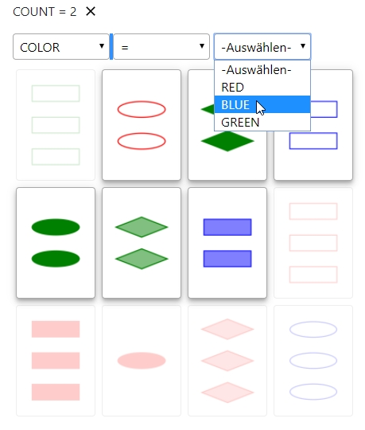
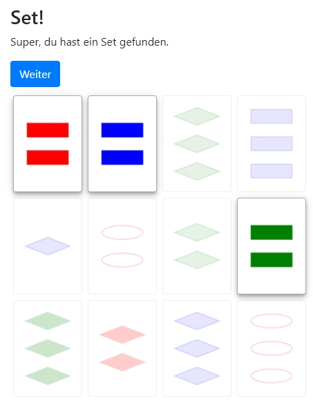
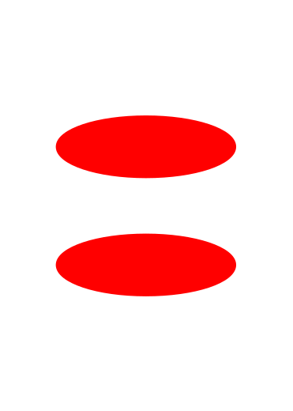
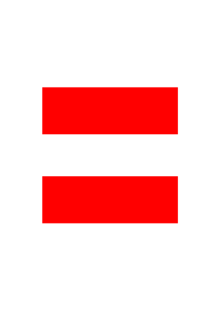
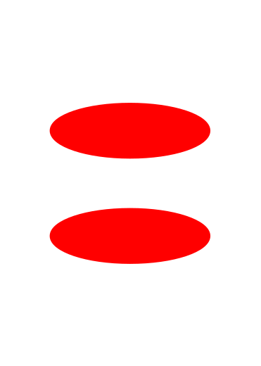
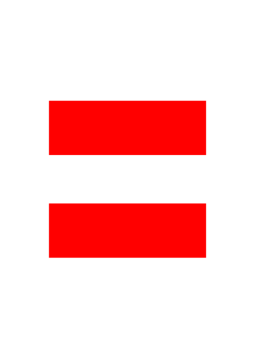
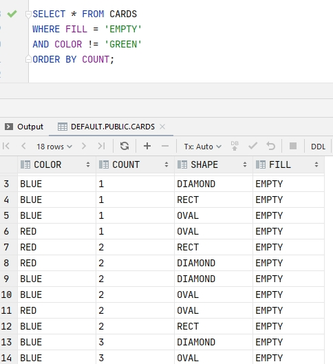

Inhalt
Das Spielprinzip
Das Database Learning Game ist angelehnt an das Kartenspiel Set. Du suchst aus den zwölf aufgedeckten Karten eine Kombination aus drei Karten, die ein sogenanntes Set bilden. Was ein Set ist, erklären wir gleich.
Der Spieltisch mit 12 Karten.
Im Gegensatz zum Kartenspiel kannst du die gewünschten Set-Karten nicht direkt auswählen. Stattdessen musst du eine Abfrage erzeugen, die einen Teil der Karten herausfiltert.
Der Abfrage-Baukasten.
Erfüllen die verbliebenen Karten die Anforderungen eines Sets, erhälst du 30 Punkte. Die drei Set-Karten werden vom Tisch entfernt und die verbliebenen Karten gegebenenfalls auf zwölf Karten aufgefüllt.
Set gefunden.
Kommst du mal nicht weiter, kannst du drei zusätzliche Karten aufdecken, um mehr Auswahl zu haben - das kostet dich aber 20 Minuspunkte!
Was ist ein Set?
Jede Karte hat vier Eigenschaften: Farbe, Form, Füllung und Anzahl.
Drei Karten bilden dann ein Set, wenn sie in jedes dieser Eigenschaften entweder alle gleich oder alle verschieden sind.
Sie bilden kein Set, wenn zwei von ihnen in einer Eigenschaft gleich sind und die dritte Karte verschieden ist.
Am besten verstehst du Sets mit einigen Beispielen:
Beispiele für Sets
Diese Karten bilden ein Set, denn Farbe, Form und Anzahl sind bei allen drei Karten gleich, und die Füllung ist bei allen drei Karten verschieden.
 



Diese Karten bilden ein Set, denn Farbe, Füllung und Anzahl sind bei allen drei Karten gleich, und die Form ist bei allen drei Karten verschieden.
Diese Karten bilden ein Set, denn die Form ist bei allen drei Karten gleich, und Anzahl, Füllung und Farbe sind bei allen drei Karten verschieden.
Gegenbeispiele
Kein Set, denn die Anzahl ist bei zwei Karten gleich und bei der dritten verschieden.
Kein Set, denn Füllung und Form sind bei zwei Karten gleich und bei der dritten verschieden.
Lernmodus und Spielmodus
Im Modus Lernen kannst findest du vorgefertigte Tisch-Konstellationen und erzeugst Abfragen, um die darin versteckten Sets zu finden. Die Aufgaben beginnen leicht und werden zunehmen schwerer.
Im Modus Spielen hast du 5 Minuten Zeit, um so viele Punkte wie möglich zu erreichen. Trage dich nach dem Spiel in die Highscore-Liste ein, um deine Leistung online mit deinen Freunden zu vergleichen.
Datenbanken
Eine Datenbank ist der Speicher, der hinter den meisten üblichen Webanwendungen steht, wie z.B. Shops, Wikipedia oder Online-Klassenräumen. Die Webanwendungen greifen mit SQL-Abfragen auf Tabellen dieser Datenbanken zu, um die benötigten Daten auszuwählen.
Datenbankabfragen funktionieren genauso wie die Abfragen im Set-Spiel. Wenn du geübt hast Set-Karten anhand von Kriterien aus der Menge auszuwählen, wird es dir leichtfallen die Programmiersprache SQL zu lernen.
So sieht eine Datenbankfrage in SQL aus. Erkennst du die Abfrage wieder?
